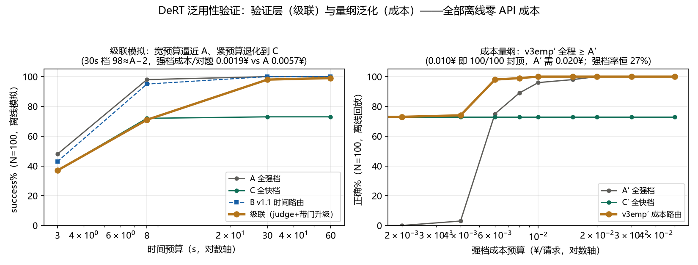

Deadline-aware Runtime for Tool-agents · 四时钟检查点 · 判卷驱动级联
Agent 的每个任务都带有隐含的时间约束：用户在等，成本在烧，而一个任务由多次模型调用构成、 模型档位价差数倍。现有框架对时间的处理停留在「超时中断」——事后补救而非事中决策。 DeRT 的核心主张是把时间作为一等公民：调度器在任务全程设置四个时钟检查点 （首步选档、收尾触发、判卷门、升级门），时间从一次性分配变为贯穿全程的连续决策； 且用户永远不需要输入时间——deadline 是交付条件的影子。在这一核心之上， 系统兑现两个效果：重复任务经影子难度记忆首轮廉价试错、此后直达正确档位， 第二轮即收敛至强档水平；未见过的任务靠难度信号路由，并把时间约束泛化为成本等 一般化资源量纲——典型预算下以约三分之一成本达到与全程强档相当的成功率。 全部结论来自离线受控实验，经配对显著性检验。
Agent 与聊天机器人的本质区别在于：一个任务 = 多次模型调用——规划、调工具、读结果、再决策， 典型流程五到十次起步。与此同时，每个任务都背着隐性预算：交互场景里用户在等， 批处理场景里成本在烧。模型档位之间价差数倍，「这个任务用哪个模型」不是实现细节， 而是直接决定体验与毛利的运行时决策。
时间约束把选档变成一道两难题。全用强模型，多数任务在白花钱，且慢； 全用弱模型，关键任务直接翻车。本项目实测给出结构性数字： 仅约四分之一的任务真正需要强模型——一刀切在两头都是坏答案。
给定时间里强模型赶不赶得完，无法先验判断；训练路由器要标注数据， 固定阈值怕漂移（本项目实证过延迟漂移导致整档路由失效）。 而更普遍的现状是：主流 Agent 框架对时间根本不做决策——只在超时后粗暴中断， 白白烧掉的调用没有任何回收。DeRT 认为时间值得被当成一等公民： 在任务全程持续做时间决策，而不是在终点设一道墙。
「把时间当一等公民」具体是什么意思？——四个时钟检查点。
这与主流框架的差异是结构性的：它们的超时是终点上的一道墙，撞上去之前对时间无感知； DeRT 的四个检查点让模型调用变成可随时止盈止损的期权——每一秒都在被重新定价。 这是本项目与现有工作最本质的差异，也是项目名 Deadline-aware 的由来。
这一核心机制在两类场景上各兑现出一个效果。先看时间省在哪里——重复任务。
真实部署中的 Agent 负载高度重复——客服、运维、办公场景的同类任务反复出现。 时间最贵的浪费之一，是对同一个任务反复试错。DeRT 让「第一次试错」变成一次性学费： 此后所有同类任务直达正确档位。
老难题不再浪费一次注定失败的快档尝试——时间不花在已知会输的地方。
难客直达强档，判卷门兜底拦截可疑答案；判卷经校准，召回 96.3%，偏保守属 fail-safe 取向。
熟客继续走便宜快档，判卷通过不冤枉升级——省的是「全强」里那些白花的钱。
效果：重复任务第二轮即收敛至强档直答水平——冷启动的代价只是一次廉价试错 （几分钱的量级）。系统上线越久，单位任务的时间与成本越低。
记忆只覆盖见过的任务。没见过的怎么办？——时间约束自己要泛化。
对首次出现的任务，用廉价的问句特征（任务类型、期望工具形态）预测「该不该请强模型」—— 实测中快档正确性按任务类型高度集中，难任务一开始就走对路， 时间就不会浪费在「先失败再纠正」上。
升级门的「来得及吗」依赖对强档延迟的估计。DeRT 在线维护窗口分位数 / 经验 CDF， 估计随模型换版、负载波动自动跟随——固定阈值对延迟漂移不稳健这一点在本项目中被实证过， 自适应门正是对它的回答。
时间约束只是资源约束的一种。把横轴从「时间预算」换元为「成本预算」， 同一套四时钟级联机制依然成立——证明它不是针对某个量纲的特殊技巧，而是通用架构。

效果：紧预算档同时反超「全强」与「全弱」两种一刀切策略； 典型预算下以约 1/3 成本达到与全程强档相当的成功率（98% 对 99%）； 成本量纲下全部档位不低于全强档。
核心机制与两个兑现共用同一套底座。下面给出完整构造与实验汇总。
兜底纪律：判卷员不可用则降级直通，服务不阻塞；强档也答不对则如实交付失败； 每个检查点决策均发事件（SSE），全程可审计。
| 主张 | 兑现结果 |
|---|---|
| 核心 · 时间是一等公民 | 四个时钟检查点贯穿全程；紧预算收尾触发强制交草稿——超时变成止损而非损失； 用户无需输入时间，deadline 由交付条件隐含。 |
| 兑现一 · 快 / 准 / 省 | 重复任务第二轮收敛至强档直答水平；判卷召回 96.3%（校准可调）； 熟客免试错、不冤枉升级。 |
| 兑现二 · 泛化 | 紧预算档同时反超两种一刀切；典型预算约 1/3 成本达全程强档相当成功率 （98% 对 99%）；成本量纲全部档位不低于全强档。 |
| 工程底座 | 35 项离线测试全过、一键自检、32 并发压测 p95<0.4s；框架自身开销约百 MB 内存—— 消耗几乎全部在模型调用本身，调度器近乎免费。 |
| 选择 | 放弃的替代方案 | 理由 |
|---|---|---|
| 时间做进运行时（四检查点） | 超时中断 / 显式 deadline 输入 | 事后中断无法回收已烧掉的调用；向用户要时间则把负担转嫁给交互——交付条件自动隐含约束。 |
| 判卷与快档同量级小模型 | 独立的更强判卷模型 | 零额外部署、零额外成本；判卷员是接口而非实体，可随时更换更强的。 |
| 判卷偏保守（宁可误升级） | 激进放行以省升级成本 | 错误代价方向安全：误判只多花小钱，漏判会交错答案。 |
| 任务签名做难度指纹 | 文本 embedding 相似度 | 实测发现难度藏在「快档能力」里而非措辞里，语义相似的任务难度可以完全不同。 |
| 状态外置为单 JSON 文件 | 数据库 / 向量库 | 无训练管道、无状态迁移；服务可随时重建，冷启动本身就是最便宜的探索方式。 |
DeRT 证明了一件事：时间可以被当作 Agent 运行时的一等公民—— 不是终点上的一道超时墙，而是全程四个检查点上的连续决策； 在此之上，「快档先试 — 判卷把关 — 按需升级 — 影子记忆」的闭环 同时拿到低成本与高质量：重复任务越用越省，新任务靠难度信号路由并泛化到成本量纲。
正在推进的方向：模型供应商更换后的路由自愈速度量化（自适应阈值对延迟漂移的跟随）； 面向批处理负载的成本路由态；难度签名跨措辞泛化。